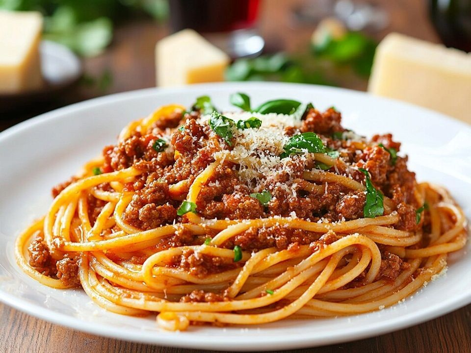

Spaghetti Bolognese

Ingredients:
- 200g spaghetti
- 2 tablespoons olive oil
- 2 garlic cloves, minced
- 1 onion, chopped
- 400g canned crushed tomatoes
- 1 teaspoon dried oregano
- Salt and pepper to taste
- Grated Parmesan cheese (optional)
Preparation👨🍳:
- Cook the spaghetti in boiling salted water according to package instructions. Drain and set aside.
- In a pan, heat olive oil. Sauté garlic and onion until soft.
- Add crushed tomatoes, oregano, salt, and pepper. Simmer for 10–15 minutes.
- Add the cooked spaghetti and toss to coat with the sauce.
- Serve with grated cheese if desired.